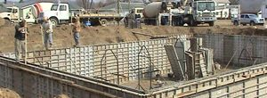

Built from
the ground up.
From the first excavation to a solid foundation.
Quality construction in the Mid-Ohio Valley
for more than 40 years.
Whatever the job.
Start with Fouss.
Construction above ground.
Experience below it.
 FOUSS / 01
FOUSS / 01Construction
Quality service for more than 40 years in new construction and remodeling. Excavation and foundation work, too.
Explore division ↗ FOUSS / 02
FOUSS / 02Septic Systems
Septic tank sales, installation, service and pumping. Plus the materials to keep your system working.
Explore division ↗
FOUSS / 03Poured Walls
Simonton brick pattern forms, reinforced with rebar, for basements and retaining walls.
Explore division ↗MID-OHIO VALLEY
Local roots.
Solid reputation.
Larry Fouss Construction has been a leader in the Mid-Ohio Valley community for more than 40 years. Our company has a reputation for quality service performed quickly at a reasonable cost.
We handle excavation, poured concrete walls, new construction, remodeling and foundation work. We also sell, service, install and pump out septic tanks, and manufacture our own precast concrete septic tanks at our shop.
Meet your contractor